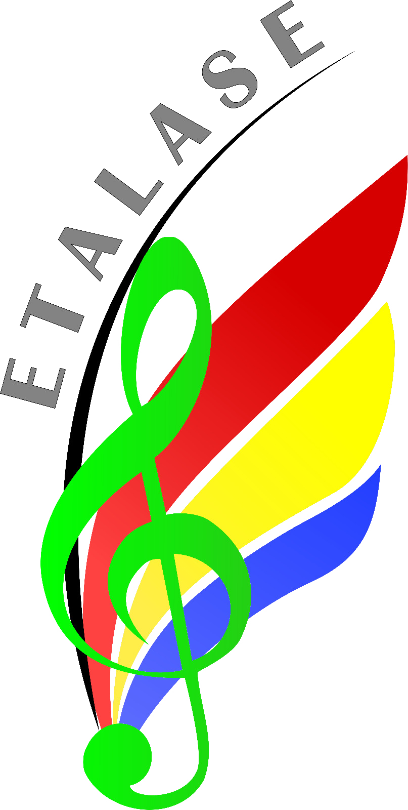
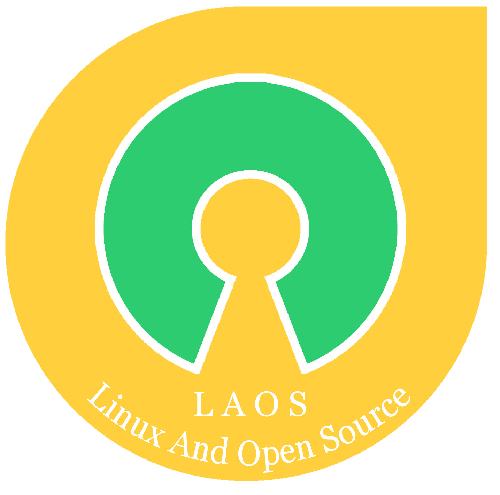
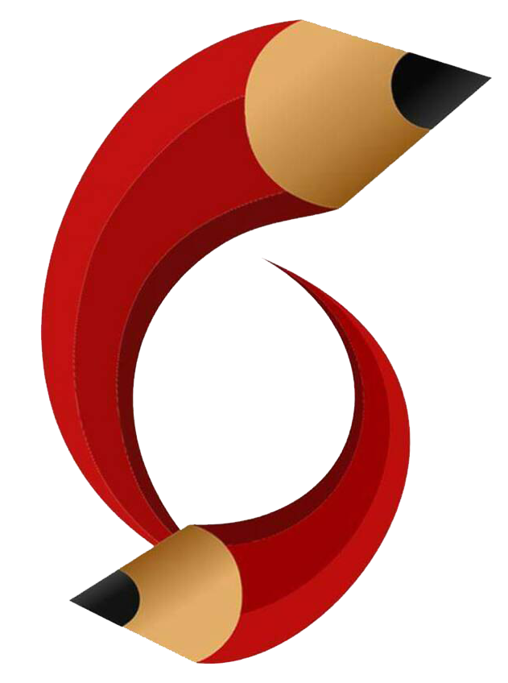

Website yang menyediakan informasi tentang semua organisasi di fakultas ilmu komputer. |
BEM
|

BPM
Badan Perwakilan Mahasiswa Fakultas Ilmu Komputer Universitas Jember (BPM ILKOM UNEJ) merupakan suatu organisasi
yang memiliki kekuasaan legislatif. BPM memiliki tugas :
|
BALWANABalwana adalah oraganisasi yang bergerak dibidang kepencinta alam, memiliki rasa persaudaraan dan loyalitas yang tinggi dalam berorganisasi, memberi tahu untuk lebih peka dalam kondisialam saat ini, dan masa depan, serta bersedia mengabdi kepada Tuhan, bangsa, dan tanah air. |
ETALASE UKM – KESENIAN ETALASE adalah Unit Kegiatan Mahasiswa yang berfungsi sebagai wadah pengembangan kegiatan ekstrakulikuler di yang bersifat penalaran, bakat dan minat di bidang kesenian serta organisasi. |
LAOS UKM laos merupakan wadah mahasiswa FASILKOM yang tertarik kepada dunia sistem operasi Open Source terutama linux. UKM Laos adalah ukm yang menjadi tempat berkumpulnya para pecinta linux maupun orang yang ingin lebih mengerti. |
BINARY UKM Binary Sebuah wadah mahasiswa di bidang jurnalistik, untuk mengembangkan diri menjadi insan yang kreatif dan penuh karya. |
HIMASIFOrganisasi mahasiswa intra kampus yang merupakan lembaga yang menaungi mahasiswa prodi system informasi. |
HIMATIF
|

O MACO
|

AL-AZHAR
Al AZHAR merupakan salah satu UKM kerohanian bernuansa Islami yang berdiri di bawah naungan Fakultas Ilmu Komputer.
|